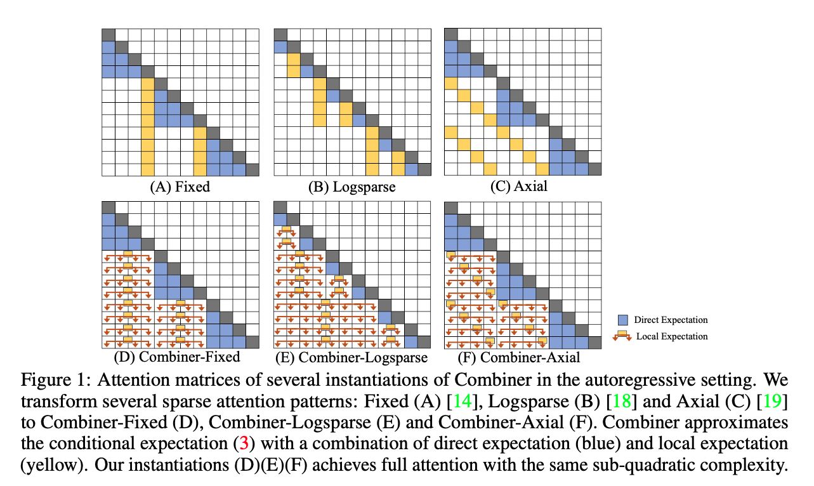
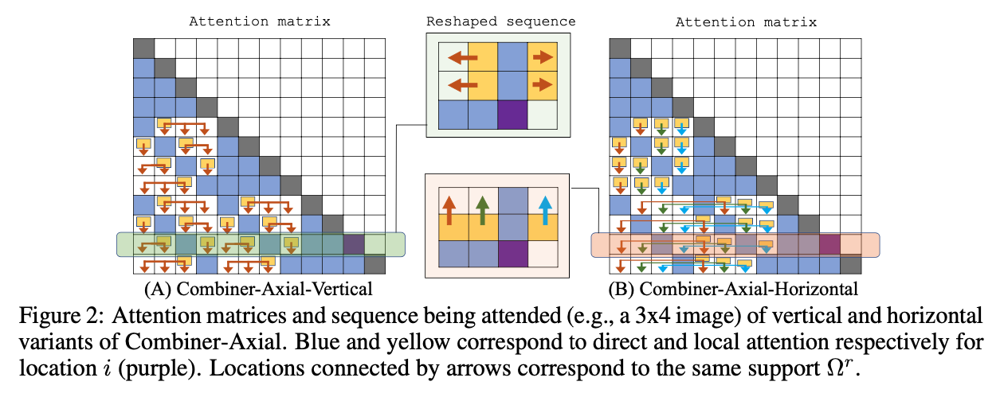
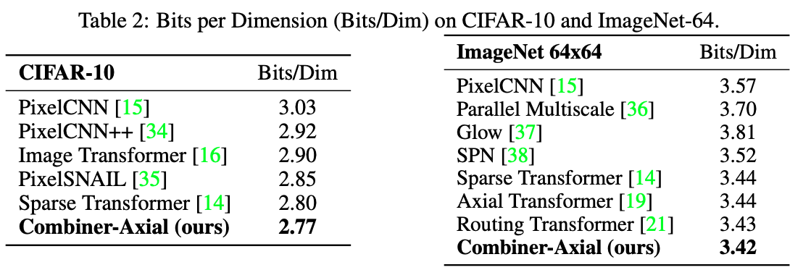

1. Read the title and make an opinion of what’s in the paper (e.g., the area, the task)
Combiner: Full Attention Transformer with Sparse Computation Cost
Year: 2021
The paper is clearly addressing the computation cost of Attention within the Transformer architecture. It also looks like they achieve Full Attention at the cost of Sparse Attention.
Very cool!
2. Read the abstract well and form a hypothesis of
- What’s new in the paper?
- Do you have a clear overview about what the paper is all about?
The key limitation of transformers is their quadratic memory and time complexity with respect to the sequence length in attention layers
This expansion restricts use of long sequences in Transformers. The BERT architecture restricts the sequence length to 512 to limit this expanse and keep the calculations tractable. There have been numerous attempts of addressing this issue with Sparse Attention mechanisms, which do not attend to every token, but take a sparsity approach.
We propose Combiner, which provides full attention capability in each attention head while maintaining low computation and memory complexity.
This looks like an upgrade in both directions: a complexity upgrade over Full Attention, and an expressivity upgrade over Sparse Attention.
The key idea is to treat the self-attention mechanism as a conditional expectation over embeddings at each location, and approximate the conditional distribution with a structured factorization.
This is clearly what is new in the paper. It is not clear to me exactly how the distribution helps, or what it conveys.
Each location can attend to all other locations, either via direct attention, or through indirect attention to abstractions, which are again conditional expectations of embedding from corresponding local regions.
Does this somehow merge multiple embeddings, or does it select the most probable out of a list of candidates? I am able to see if this abstraction layer exists, you can spread out your attention fully.
3. Look at the images and extract a set of “questions” about what is not clear about their method from the images. Now your job is to answer these questions by reading the paper.
Figure 1 is clearly showing the difference between full attention (via their method) and sparse attention above. It seems that the local expectation takes on a single embedding, but does so at via a distribution, or choice over multiple tokens.

Also, it looks like there is an additional dimension of complexity when moving to images because you have a two dimensional image that you can attend to.

4. Read the method aiming to answer your “questions” about the paper. Focus on understanding only the things relevant for the story (i.e., to understand the contribution).
Ok, I’m going to try to understand Attention as conditional expectation:
From the original Transformer Paper, we have the attention mechanism:
which is a scaled (\f{}{\sqrt{d}}) dot-product attention.
They explain:
For a position , the attention formulation (1) can be viewed as conditional expectation of rows in . Specifically, since
softmaxoutputs a probability distribution, we can rewrite (1) as
The complexity of is the bottleneck of the computation for
The main idea in Combiner is to exploit a hierarchical structure for conditional probability modeling in the equation above.
There are a lot more details in their method I don’t have time to write on.
5. Read the experiments to convince you that the show results are caused by their claim. Be aware that the experiments highlighted are the best scenarios and are fully hyper-parameter tuned.
They do appear to show good results, with some cases that Big berd is able to surpass them give a certain seq length (2k), but once increased to 8k they are able to show SotA results.

I am not as familiar with their experimental datasets, so it is hard to judge what they impact of their changes are in relation to other changes I’m familiar with. However, they are able to produce very good number, with a compelling argumentation on how to supplement attention.
6. Make sure you answered all your questions. Did the authors convince you that their story has the effect that they claim?
They did convince me. I think this will be a valuable paper in the future, and the next step of being able to apply the Transformer architecture to more and more subdomains.